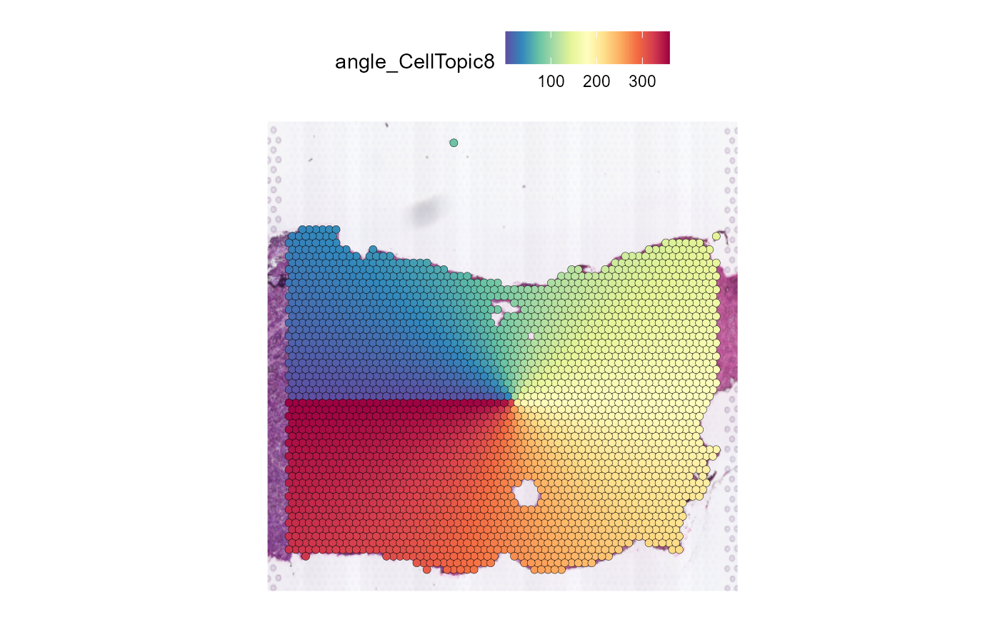

SpaTopic
We first use SpaTopic to get the CellTopic of the spatial domain.
HCC_1L_obj <- RunPCA(HCC_1L_obj, assay = "SCT", verbose = FALSE)
HCC_1L_obj <- FindNeighbors(HCC_1L_obj, reduction = "pca", dims = 1:30)
HCC_1L_obj <- FindClusters(HCC_1L_obj, resolution = 1.5)
HCC_1L_obj <- RunUMAP(HCC_1L_obj, reduction = "pca", dims = 1:30)
HCC_1L_spot_clusters <- HCC_1L_obj@meta.data["seurat_clusters"]
result_list <- CellTopic(
HCC_1L_spot_celltype,
HCC_1L_spot_clusters,
cluster = "seurat_clusters",
num_topics = 10,
percent = 0.7
)
HCC_1L_obj <- AddMetaData(HCC_1L_obj, result_list[["CellTopic"]])
SpatialDimPlot(HCC_1L_obj, group.by = "CellTopic", image.alpha = 0, pt.size.factor = 2.2) + scale_fill_manual(values = my_colors)Modularity Optimizer version 1.3.0 by Ludo Waltman and Nees Jan van Eck
Number of nodes: 2791
Number of edges: 103726
Running Louvain algorithm...
Maximum modularity in 10 random starts: 0.7420
Number of communities: 16
Elapsed time: 0 secondsSpatial expansion
Spatial_expansion then divides buffers and angles for
the specified spatial domain. It is worth noting that this method is not
only applicable to SpaTopic, but also to arbitrary spatial partitions
with certain continuity.
We divide the buffers and angles of the spatial domain of the tumor
boundary by specifying CellTopic column in
Seurat@meta.data, and CellTopic8 in it.
HCC_1L_obj <- Spatial_expansion(HCC_1L_obj,
CellTopic = c("CellTopic8"),
meta.col = "CellTopic",
type = "Hexagon",
edge.plot = TRUE
)Use the low resolution image
The type of data is Hexagon
The alpha value of alpha-shape method is 232
The distance of expansion is 200
The expansion of the data is added to the Seurat@meta.data and the message is added to Seurat@miscWhen set edge.plot = TRUE, the function draw a reference
plot representing the specified spatial domain divide. We can obtain a
more appropriate spatial domain divide by modifying the alpha parameter
of alpha-shape calculation.
We can check the relevant parameter settings in
Seurat@misc as a reference for our adjustments
HCC_1L_obj@misc$expansion$CellTopic8[1:5]$distance
[1] 200
$alpha
[1] 232
$type
[1] "Hexagon"
$image
[1] "lowres"
$image.factor
[1] 0.02920561Here we get a more appropriate spatial domain divide by setting
alpha = 280.
HCC_1L_obj <- Spatial_expansion(HCC_1L_obj,
CellTopic = c("CellTopic8"),
meta.col = "CellTopic",
alpha = 280,
type = "Hexagon",
edge.plot = TRUE
)Use the low resolution image
The type of data is Hexagon
The alpha value of alpha-shape method is 280
The distance of expansion is 200
The expansion of the data is added to the Seurat@meta.data and the message is added to Seurat@miscWe can use SpatialFeaturePlot in Seurat to show buffer
divide of spatial domain.
SpatialFeaturePlot(HCC_1L_obj, features = "expansion_CellTopic8", pt.size.factor = 2.2)On the other hand, you can increase or decrease the width of the
buffers by setting distance .
HCC_1L_obj_1 <- Spatial_expansion(HCC_1L_obj,
CellTopic = c("CellTopic8"),
meta.col = "CellTopic",
distance = 800,
alpha = 280,
type = "Hexagon",
edge.plot = FALSE
)
SpatialFeaturePlot(HCC_1L_obj_1, features = "expansion_CellTopic8", pt.size.factor = 2.2)Use the low resolution image
The type of data is Hexagon
The alpha value of alpha-shape method is 280
The distance of expansion is 800
The expansion of the data is added to the Seurat@meta.data and the message is added to Seurat@miscAngle
Spatial_expansion creates not only buffer information in
Seurat@meta.data, but also angle information.
We regard the geometric center of a spatial domain as the center, and the left side of the spatial domain is the starting point and the ending point of the circle.
SpatialFeaturePlot(HCC_1L_obj, features = "angle_CellTopic8", pt.size.factor = 2.2)
Gene plot
After dividing the spatial domain we can use
Expansion_gene_plot to show gene expression changes in
buffers in different angles.
Here we set angle = 90, parts = 2 to get
gene expression on both sides of the tumor boundary.
Expansion_gene_plot(HCC_1L_obj,
CellTopic = c("CellTopic8"),
gene = c("ACTA2", "C11orf96", "CALD1", "COL1A2", "CSRP1", "CTGF", "FLNA", "IGFBP7", "MYH11", "MYL9", "PPP1R14A", "TAGLN", "TPM2"),
meta.col = "CellTopic", angle = 90, parts = 2, plot = TRUE, cols = my_colors
)This method was consistent across different angles, as shown when dividing the spatial domain into four sections starting at 50 degrees.
Expansion_gene_plot(HCC_1L_obj,
CellTopic = c("CellTopic8"),
gene = c("ACTA2", "C11orf96", "COL1A2", "CSRP1"),
meta.col = "CellTopic", angle = 50, parts = 4, plot = TRUE, cols = my_colors
)If you need to plot data for further analysis or re-plotting, you can
set plot = FALSE to obtain the expression of genes in
buffers at different angles.